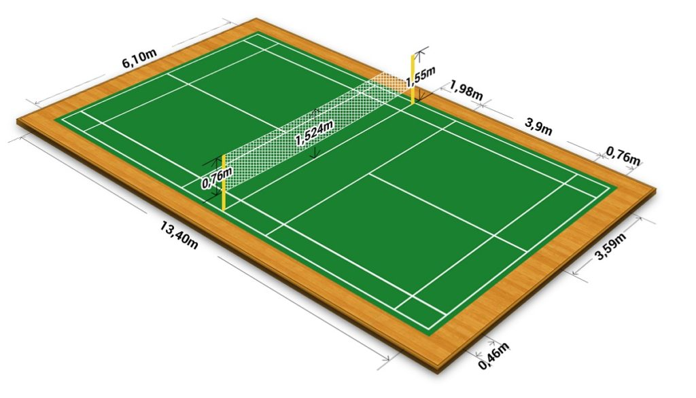

– Sân hình chữ nhật được xác định bởi các đường biên rộng 40cm. Độ dài đường chéo sân độ là 14m723. Độ dài đường chéo sân đơn là 14m366. Sân dùng cho cả thi đấu đơn và đôi.
– Các đường biên của sân phải dễ phân biệt và tốt hơn là màu trắng hoặc màu vàng.
– Tất cả các đường biên hình thành nên phần khu vực mà chúng xác định.
– Hai cột lưới cao 1m55 tính từ mặt sân. Chúng phải đủ chắc chắn và đứng thẳng khi lưới được căng trên đó. Hai cột lưới và các phụ kiện của chúng không được đặt vào trong sân.
– Hai cột lưới được đặt ngay trên đường biên đôi bất kể là trận thi đấu đơn hay đôi.
– Lưới phải được làm từ những sợi nylông (dây gai) mềm màu đậm, có độ dày đều nhau với mắt lưới không nhỏ hơn 15mm và không lớn hơn 20mm.
– Lưới có chiều rộng 760mm và chiều dài ngang sân là 6,7m.
– Đỉnh lưới được cặp bằng nẹp trắng nằm phủ đôi lên dây lưới hoặc dây cáp chạy xuyên qua nẹp. Nẹp lưới phải nằm phủ lên dây lưới hoặc dây cáp lưới.
– Dây lưới hoặc dây cáp được căng chắc chắn, ngang bằng với đỉnh hai cột lớn.
– Chiều cao của lưới ở giữa sân tính từ đỉnh lưới đến mặt sân là 1,254m, và cao 1,55m ở hai đầu lưới tại biên dọc sân đánh đôi.
– Không có khoảng trống nào giữa lưới và cột lưới, vao hai cột lưới.